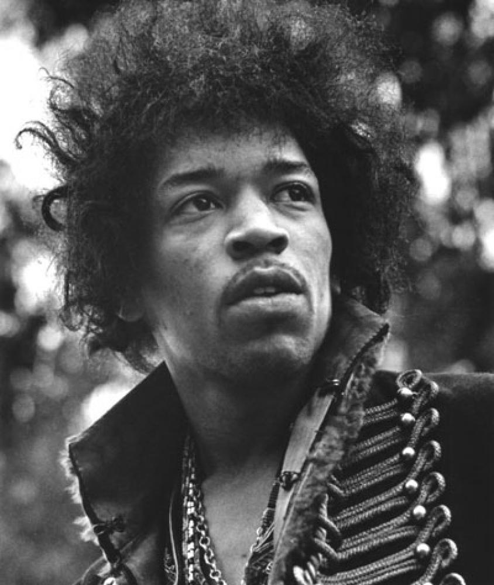

James Marshall (Jimi) Hendrix (27 November 1942 - 18 September 1970) was an American musician, songwriter and virtuoso guitarist, widely regarded as the best electric guitarist in the history of popular music. Mostly self-taught on the instrument, the left-handed Hendrix used a right-handed guitar that was restrung and played right side up. As a guitarist, he built upon the innovations of blues stylists such as B. B. King, Albert King, Buddy Guy, T-Bone Walker, and Muddy Waters, as well as those of rhythm and blues and soul music guitarists like Curtis Mayfield. Hendrix's music was also influenced by jazz; he often cited Rahsaan Roland Kirk as his favorite musician. In addition, Hendrix extended the tradition of rock guitar: although previous guitarists, such as The Kinks' Dave Davies, and The Who's Pete Townshend, had employed techniques such as feedback, distortion and other effects as sonic tools, Hendrix was able to exploit them to a previously undreamed-of extent, and to incorporate them as an integral part of his compositions. Hendrix so desired a guitar by the time he was in grade school that he had fits of depression when his father, who viewed the instrument as frivolous and jazz/rock as sinful, refused to get him one. His school counsellor told his father to get him a guitar, and his father gave him a one-stringed toy guitar. Jimi played it so much that his father finally relented and bought his son a real guitar. As a record producer, Hendrix was an innovator in using the recording studio as an extension of his musical ideas. Hendrix was notably one of the first to experiment with stereo effects during the recording process. Hendrix was also an accomplished songwriter whose compositions have been performed by countless artists. Finally, his image and influence as a rock star place him in the company of Little Richard, Chuck Berry, the Beatles, and Hendrix's first idol Elvis Presley. The controversial nature of Hendrix's style is epitomized in the sentiments expressed about his renditions of the "Star Spangled Banner", a tune he played loudly and sharply accompanied by simulated sounds of war (machine guns, bombs and screams) from his guitar. His impressionistic renditions have been described by some as anti-American mockery and by others as a generation's statement on the unrest in U.S. society, oddly symbolic of the beauty, spontaneity, and tragedy that was endemic to Hendrix's life. When taken to task on the Dick Cavett Show on the "unorthodox" nature of his performance, Hendrix replied, "I thought it was beautiful".
Hendrix was born Johnny Allen Hendricks in Seattle, Washington, the son of Al Hendricks and Lucille Jeter. His mother was an alcoholic and died young, (providing Hendrix with a musical muse which he would later express in his songs, for example, "Little Wing") when Jimi was aged 15, of cirrhosis. His father, after returning from World War II, renamed him James Marshall Hendrix. He grew up shy and sensitive. Like his contemporaries John Lennon and Paul McCartney, Hendrix was deeply affected by family events - his parents' divorce in 1951, listening to Elvis Presley, whom he loved (a color drawing, showing a young Elvis armed with a guitar, and made by the then impressionable 15 year old Hendrix himself, two months after attending Presley's concert at Seattle's Sick's Stadium on 1st September, 1957, and can be seen at that city's Rock museum), and the death of his mother, a year later. He was close to his paternal grandmother Nora Rose Moore. Nora, the daughter of an Irish Cherokee father and a mulatto mother, instilled in him a strong sense of pride about his Native American ancestry. Both of Jimi's paternal grandparents were vaudeville performers who settled in Vancouver, Canada, where his father, Al Hendrix, was born. Al relocated to Seattle, where he met and married Lucille Jeter. After Lucille's death, Al gave Jimi a ukulele, and later bought him a US$5 acoustic guitar, setting him on the path to his future vocation. After playing with several local Seattle bands and getting into trouble with the law via a stolen car, Hendrix enlisted in the Army, joining the 101st Airborne Division (stationed at Fort Campbell, Kentucky) as a trainee paratrooper. Hendrix was a poor soldier who was repeatedly caught sleeping while on duty and missing at midnight bed-check. Superiors noted that he needed constant supervision even for basic tasks, and lacked motivation. He was described by one supervisor as having "no known good characteristics", and by another that "his mind apparently cannot function while performing duties and thinking about his guitar". After less than a year he received a medical discharge after breaking his ankle on his 26th parachute jump (He said later that the sound of air whistling through the parachute shrouds was one of the sources of his "spacy" guitar sound). Hendrix was discharged from the US Army three years before the Vietnam War saw large numbers of US soldiers arrive. But his recordings would become favorites of soldiers fighting there. (A biography published in summer 2005, Room Full Of Mirrors, by Charles Cross, claims that Hendrix faked being gay - claiming to have fallen in love with another soldier - and was therefore discharged. According to Cross, Hendrix was an avid anti-communist and did not leave the US Army as a protest to the Vietnam War, but simply wanted out so he could focus on playing guitar). After leaving Ft. Campbell, Hendrix and his friend and bandmate Billy Cox moved to nearby Nashville. There they played, and sometimes lived, in the clubs along Jefferson Street, the traditional heart of Nashville's black community, and home to a lively rhythm and blues scene. During the early 1960s, Hendrix made a precarious living performing in backing bands for touring soul and blues musicians, including Curtis Knight, B. B. King, and Little Richard. His first notice came from appearances with The Isley Brothers, notably on the two-parter Testify in 1964.
On 15 October 1965, Hendrix signed a 3-year recording contract with entrepreneur Ed Chalpin, receiving $1 and 1% royalty on records with Curtis Knight. The contract later caused litigation with Hendrix and other record labels. By 1966 he had his own band, Jimmy James and the Blue Flames, and a residency at the Cafe Wha? in New York City. During this period Hendrix met and worked with singer-guitarist Ellen McIlwaine and guitarist Jeff "Skunk" Baxter. Hendrix also became close friends with a young guitarist named Randy California, who would later co-found the band Spirit. Hendrix also met iconoclast Frank Zappa during this time. Zappa introduced Hendrix to the newly-invented wah-wah pedal, a tool which Hendrix soon mastered and made an integral part of his sound. While performing with The Blue Flames at the Cafe Wha?, Linda Keith, then-girlfriend of The Rolling Stones guitarist Keith Richards, saw Hendrix, and couldn't believe he hadn't been "discovered". Knowing Chas Chandler was leaving The Animals, and looking for someone to manage, she introduced him to Hendrix. Chandler took Hendrix to England, signed him to a management and production contract as his record producer, and helped him form a new band, The Jimi Hendrix Experience, with bassist Noel Redding and drummer Mitch Mitchell. With his first few show-stopping London club appearances, word of the new star spread through the British music industry. His showmanship and dazzling virtuosity made instant fans of reigning guitar heroes Eric Clapton and Jeff Beck, as well as members of The Beatles and The Who, whose managers signed Hendrix to The Who's record label, Track Records. Jimi's first single was a cover of "Hey Joe", a stylised blues song written by Billy Roberts that was virtually a standard for rock bands at the time. Hendrix and Chandler had seen folk-singer Tim Rose performing his slow arrangement of Hey Joe at the Cafe Wha?, and adapted it to Hendrix' emerging psychedelic style. Further Hendrix success came with the incendiary and original "Purple Haze", with a heavily distorted guitar sound which still influences people now; the soulful ballad "The Wind Cries Mary", and "Hey Joe". The three songs were Top 10 hits. Established as a star in the U.K., Hendrix and his girlfriend Kathy Etchingham moved into a flat at 23 Brook Street in central London. The nearby 25 Brook street was once the home of baroque composer George Frideric Handel. Hendrix, aware of this musical coincidence, bought Handel recordings including the Messiah and the Water Music. The two houses currently comprise the Handel House Museum, where both musicians are celebrated.
The 1967 release of the group's first album, Are You Experienced, is a mix of melodic ballads "The Wind Cries Mary", pop-rock "Fire", psychedelia "Third Stone from the Sun", and blues "Red House", and is a template for much of their later work. Hendrix went to a hospital with burns to his hands after setting his guitar on fire for the first time at the Astoria theatre in London on March 31, 1967. Later, after causing damage to amplifiers and other stage equipment at his shows, Rank Theatre management warned him to "tone down" his stage act. The Monterey Pop Festival booked The Jimi Hendrix Experience at the urging of festival board member Paul McCartney. At the concert, filmmaker D. A. Pennebaker immortalized Hendrix's iconic burning and smashing of his guitar in the film Monterey Pop. A short gig, opening for the pop group The Monkees on their first American tour, followed the festival. The Monkees asked for Hendrix because they were fans, but their mostly teenage audience did not warm to his outlandish stage act and he abruptly quit the tour after a few dates, just as "Purple Haze" gained popularity in America. Chas Chandler later admitted that being "thrown off" The Monkees tour was engineered to gain maximum media impact and outrage for Hendrix. At the time a story circulated claiming that Hendrix was removed from the tour because of complaints made by the Daughters of the American Revolution that his stage conduct was "lewd and indecent". Australian journalist Lillian Roxon, accompanying the tour with singer Lynne Randell (the other support act), concocted the story. The claim was repeated in Roxon's 1969 Rock Encyclopedia but she later admitted it was fabricated. Meanwhile in England, Hendrix's wild-man image and musical gimmickry (such as playing the guitar with his teeth and behind his back) continued to bring publicity, but Hendrix was already advancing musically and becoming frustrated by media and audience concentration on his stage act and his hit singles. The Jimi Hendrix Experience's second 1967 album, Axis: Bold as Love continued the style established by Are You Experienced with tracks such as "Little Wing" and "If 6 Was 9", showing his continuing mastery of the electric guitar. A mishap almost prevented the album's release; Hendrix lost the master tape of side 1 of the LP after he left it in a taxi. With the release deadline looming, Hendrix, Chandler and engineer Eddie Kramer in an all-night session made a remix from the multitracks. Kramer and Hendrix later said that they were never entirely happy with the results. 
Songs For Groovy Children: The Fillmore East Concerts
Electric Ladyland Deluxe Edition
Both Sides of the Sky
Live At George’s Club 20 1965 & 1966: Curtis Knight (featuring Jimi Hendrix)
Machine Gun: The Fillmore East First Show 12/31/69
Jimi Hendrix: Electric Church
Freedom: Jimi Hendrix Experience Atlanta Pop Festival
You Can’t Use My Name: Curtis Knight & The Squires (featuring Jimi Hendrix) The RSVP/PPX Sessions
The Cry Of Love